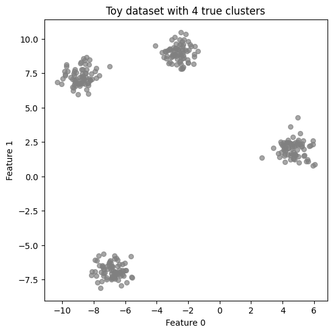
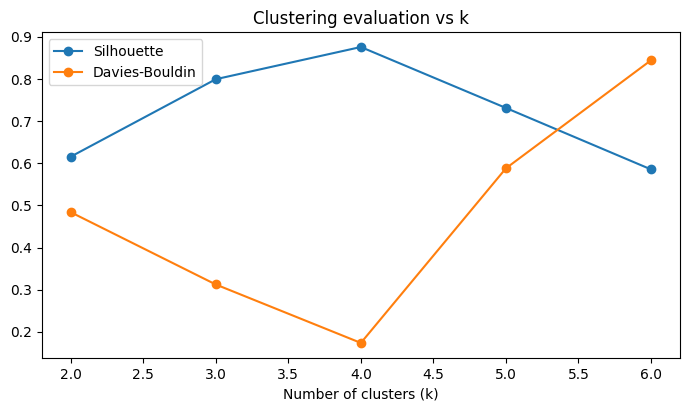
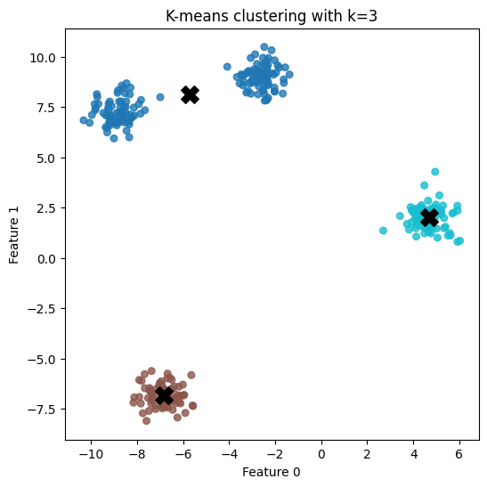

import numpy as np
import matplotlib.pyplot as plt
import seaborn as sns
from sklearn.datasets import make_blobs
from sklearn.cluster import KMeans
from sklearn.metrics import silhouette_score, davies_bouldin_score
import pandas as pd
# sns.set(style="whitegrid", palette="muted", font_scale=1.2)Introduction to Clustering and Dimensionality Reduction
Clustering is an unsupervised learning method that groups similar data points based on feature similarity, rather than relying on labels. It helps uncover hidden patterns in data.
Why is it useful? - Discover customer segments in marketing data
- Detect anomalies in network traffic or IoT data
- Compress images by grouping similar colors
- Identify disease subtypes in healthcare
- Cluster news articles by topic
In this notebook: 1. Overview of clustering methods
2. Overview of dimensionality reduction
3. An interactive demo: K-means on a toy dataset
4. Metrics to evaluate clustering results
Methods Covered
Clustering Algorithms
- K-means
Partitions data into (k) clusters by minimizing within-cluster variance. - Hierarchical Clustering
Builds nested clusters via agglomerative or divisive linkage. - DBSCAN (Density-Based)
Finds clusters of arbitrary shape and identifies noise.
Dimensionality Reduction
- PCA (Principal Component Analysis)
Linearly projects data into directions that maximize variance. - t-SNE (t-Distributed Stochastic Neighbor Embedding)
Non-linear technique optimized for visual separation in low-D.
Evaluation Metrics
- Silhouette Score (−1 to 1): compactness vs separation
- Davies–Bouldin Index: average distance ratio of clusters
- Visual Inspection: critical for clustering quality
Let’s start with a hands-on demo using k-means on a synthetic dataset.
Generate synthetic data
X, y_true = make_blobs(n_samples=300, centers=4, cluster_std=0.60, random_state=42)
plt.figure(figsize=(6, 6))
plt.scatter(X[:, 0], X[:, 1], s=30, color='grey', alpha=0.7)
plt.title("Toy dataset with 4 true clusters")
plt.xlabel("Feature 0")
plt.ylabel("Feature 1")
plt.show()
How K-Means Clustering Works
K-Means is a centroid-based clustering algorithm that partitions the dataset into (k) clusters.
Steps:
- Initialisation: Randomly place (k) centroids in the feature space.
- Assignment: Each data point is assigned to the nearest centroid, forming clusters.
- Update: New centroids are computed as the mean of all points in each cluster.
- Repeat: Assignment and update steps repeat until centroids stabilise or a maximum number of iterations is reached.
The algorithm aims to minimise the total within-cluster sum of squares (inertia), i.e., the variance within each cluster.
K-Means works well for convex, isotropic clusters but struggles with non-spherical or unevenly sized groups.
Clustering Evaluation Metrics
To assess clustering quality, we use a combination of numerical metrics and visual inspection. These metrics rely on Euclidean distance (Cartesian distance) to measure intra-cluster compactness and inter-cluster separation.
üìè Silhouette Score
The silhouette score measures how well each point fits within its cluster compared to other clusters.
To compute a single silhouette score for the entire clustering result, we take the average silhouette score across all data points:
\[ S = \frac{1}{n} \sum_{i=1}^{n} s_i \]
where: - \(n\) is the total number of samples, - \(s_i\) is the silhouette score for point \(i\), calculated as:
\[ s_i = \frac{b_i - a_i}{\max(a_i, b_i)} \]
üîπ What are \(a_i\) and \(b_i\)?
\(a_i\) = average distance from point \(i\) to all other points in the same cluster
→ Measures how tightly clustered the point is with its own group (intra-cluster cohesion).\(b_i\) = average distance from point \(i\) to all points in the nearest different cluster
→ Measures how far away the point is from the closest alternative cluster (inter-cluster separation).
üìä Interpreting the Score
- \(S \approx 1\): Points are well-clustered and clearly separated.
- \(S \approx 0\): Points lie between clusters — ambiguous assignment.
- \(S < 0\): Points may be misclassified, closer to another cluster than their own.
The silhouette score provides both a quantitative and intuitive measure of clustering quality.
Davies–Bouldin Index
The DB index evaluates the average similarity between each cluster and its most similar one, where similarity is the ratio of intra-cluster dispersion to inter-cluster distance. It is computed as:
\[ DB = \frac{1}{k} \sum_{i=1}^{k} \max_{j \ne i} \left( \frac{\sigma_i + \sigma_j}{d(c_i, c_j)} \right) \]
where: - \(\sigma_i\) = average distance of all points in cluster \(i\) to its centroid \(c_i\) - \(d(c_i, c_j)\) = Euclidean distance between centroids \(c_i\) and \(c_j\)
- Lower is better
- A DB index less than 1 usually implies well-separated clusters
Visual Inspection
Plots of clustered data remain invaluable: - Reveal the shape, overlap, and structure of clusters - Help verify metric results and uncover edge cases - Especially useful when dimensionality is reduced (e.g., with PCA or t-SNE)
Conclusion: No single metric is sufficient on its own. Use a combination of quantitative scores and visual checks for a robust understanding of clustering performance.
results = []
ks = [2, 3, 4, 5, 6]
for k in ks:
km = KMeans(n_clusters=k, random_state=42)
labels = km.fit_predict(X)
sil = silhouette_score(X, labels)
db = davies_bouldin_score(X, labels)
results.append((k, sil, db))
# Show results
df = pd.DataFrame(results, columns=["k", "Silhouette", "Davies-Bouldin"])
df| k | Silhouette | Davies-Bouldin | |
|---|---|---|---|
| 0 | 2 | 0.615485 | 0.483750 |
| 1 | 3 | 0.799280 | 0.312296 |
| 2 | 4 | 0.875647 | 0.173674 |
| 3 | 5 | 0.731072 | 0.587863 |
| 4 | 6 | 0.585323 | 0.844187 |
# Plot results
fig, ax1 = plt.subplots(figsize=(7, 4))
ax1.plot(df.k, df.Silhouette, marker='o', label='Silhouette')
ax1.plot(df.k, df["Davies-Bouldin"], marker='o', label='Davies-Bouldin')
ax1.set_xlabel("Number of clusters (k)")
fig.tight_layout()
plt.title("Clustering evaluation vs k")
plt.legend()
plt.show()
best_k = 4
km4 = KMeans(n_clusters=best_k, random_state=42)
labels4 = km4.fit_predict(X)
centroids = km4.cluster_centers_
plt.figure(figsize=(6,6))
plt.scatter(X[:,0], X[:,1], c=labels4, s=30, cmap='tab10', alpha=0.8)
plt.scatter(centroids[:,0], centroids[:,1], s=200, c='black', marker='X')
plt.title("K-means clustering with k=4")
plt.xlabel("Feature 0")
plt.ylabel("Feature 1")
plt.show()
üßê Interpretation
Let’s break down what each evaluation metric tells us:
Silhouette Score: A score ≥ 0.5 typically suggests well-separated, compact clusters. Here, the silhouette score peaks at (k = 4), suggesting it’s a strong candidate for the correct number of clusters.
Davies–Bouldin Index: Lower values indicate better clustering. At (k = 4), the DB index is at its minimum, meaning the clusters are more distinct from one another and internally tight.
Visual Inspection: When plotted, the clusters at (k = 4) appear well-formed and evenly separated. Visual inspection validates the metrics and helps catch edge cases where automated scores might be misleading.
All metrics point to (k = 4) as the optimal choice for this dataset, confirming that the clustering structure is meaningful and the method performed well.
Visualising the Final Clustering Result (k = 4)
Based on our evaluation metrics, we identified k = 4 as the best number of clusters. In this step, we re-fit the K-Means model using k = 4 and visualise the resulting clusters.
Each point is coloured according to its assigned cluster, and the cluster centroids are shown as large black “X” markers. This plot helps us visually confirm whether the clusters are: - Well-separated - Roughly equal in size - Centered around meaningful centroids
It’s a simple but powerful way to interpret and validate clustering results.
best_k = 3
km4 = KMeans(n_clusters=best_k, random_state=42)
labels4 = km4.fit_predict(X)
centroids = km4.cluster_centers_
plt.figure(figsize=(6,6))
plt.scatter(X[:,0], X[:,1], c=labels4, s=30, cmap='tab10', alpha=0.8)
plt.scatter(centroids[:,0], centroids[:,1], s=200, c='black', marker='X')
plt.title("K-means clustering with k=3")
plt.xlabel("Feature 0")
plt.ylabel("Feature 1")
plt.show()